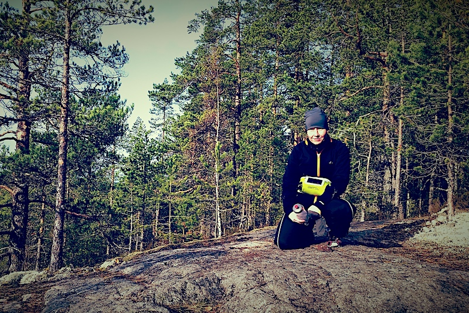

Ensimmäiseksi sinun tulee löytää retkellä tarvittavat apuvälineet. Orava lienee piilottanut ne omaan jemmaansa...
hmm.

Jep. Nyt opetellaan ottamaan suuntaa... tosin sisätiloissa. Ensimmäinen "kätkö" löytyy näillä tiedoilla: suunta
340 astetta, etäisyys 60mm. Lähtöpisteenä on karttaan piirretty rasti ja mm = milliä kartalla. ;)